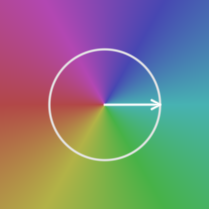
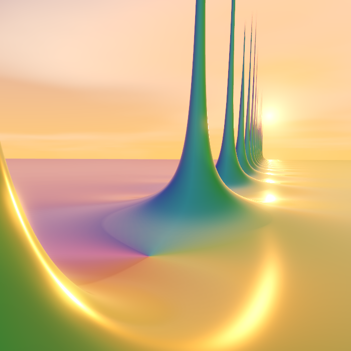

Complex Functions Explorer
An interactive 3D journey through the complex plane
Download
Introduction
Complex Functions Explorer is an interactive 3D visualization tool that brings the abstract beauty of complex analysis to life. By mapping complex numbers into a navigable three-dimensional landscape, the software allows users to explore the intricate structures of functions such as the Riemann zeta function, including zeros, poles, and the critical line, within an immersive environment.
Whether you are a student of mathematics, a researcher, or simply someone who appreciates the visual elegance of mathematical structures, this tool provides a unique perspective on how complex functions transform and shape the complex plane.
The project is intended not only as a mathematical visualization tool, but also as an invitation to contemplate the hidden geometries of the complex plane.
Domain Coloring
The explorer uses domain coloring to visualize complex-valued functions. Each point in the complex plane is assigned a color according to the phase (argument) of the function, while the magnitude determines the height of the terrain.
- Phase to Color: The color cycle (typically a rainbow or HSV wheel) represents the angle of the complex value. Purely real positive values are often mapped to green, while purely imaginary positive values map to purple, and so on.
- Magnitude to Height: Peaks and valleys represent high and low magnitudes, respectively. This makes zeros clearly visible as deep pits that reach the "floor" of the domain.


Curve Levels
Superimposed on the terrain are contour lines, or curve levels, which provide a geometric reference for the values of the function. These curves make it possible to trace how the real and imaginary components evolve across the complex plane.
- Black Curves (Real Part): These correspond to level sets where the real part of the function, \( \text{Re}(f(s)) \), takes integer values. They reveal the underlying structure of the function’s real transformation.
- White Curves (Imaginary Part): These correspond to level sets where the imaginary part, \( \text{Im}(f(s)) \), takes integer values. Together with the black curves, they form a curvilinear grid that reflects the conformal character of the mapping.
When a black curve and a white curve intersect at the base of the terrain, the point may correspond to a zero of the function, where both the real and imaginary parts vanish simultaneously.
Functions
The explorer supports various standard complex functions, including trigonometric, exponential, and logarithmic functions. However, the centerpiece of the project is the Riemann zeta function \( \zeta(s) \).
The Riemann zeta function
Defined as \( \zeta(s) = \sum_{n=1}^\infty n^{-s} \) for \( \text{Re}(s) > 1 \), it is analytically continued to the rest of the complex plane. Our implementation uses the Dirichlet Eta representation, which provides improved numerical stability and allows evaluation across the critical strip.
The Dirichlet Eta function \( \eta(s) \) is defined as:
\[ \eta(s) = \sum_{n=1}^\infty \frac{(-1)^{n-1}}{n^s} \]It is related to the zeta function by the following identity:
\[ \eta(s) = (1 - 2^{1-s})\zeta(s) \]From this, we derive the representation used in our explorer:
\[ \zeta(s) = \frac{\eta(s)}{1 - 2^{1-s}} = \frac{1}{1 - 2^{1-s}} \sum_{n=1}^\infty \frac{(-1)^{n-1}}{n^s} \]This alternating series converges for all \( s \) with \( \text{Re}(s) > 0 \), which is essential for visualizing the critical strip where the most famous unsolved problem in mathematics, the Riemann Hypothesis, resides.
In practice, the landscape is only an approximation of the Riemann zeta function, since the underlying series must be truncated after a finite number of terms using the Iterations parameter. Accuracy gradually decreases for larger imaginary values, though the overall structure of the function remains visible far beyond the region where the approximation is strictly reliable.
Options
Pressing the Esc key opens the settings menu, providing several ways to customize your experience:
- Function: Switch between different complex functions (zeta, sin, cos, etc.) to see how they transform the plane.
- Navigation: Adjust movement speed and camera height to better explore the terrain.
- Rendering: Toggle visual features like shadows, day/night cycles, and terrain shading modes (Estimated vs. Precise).
- HUD: Customize the on-screen information, including the complex plane overlay and automated zeta zero detection.
- Audio: Control the volume of the background music and the topographic drone that responds to the terrain height and phase.